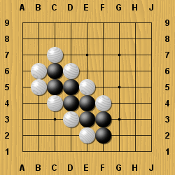
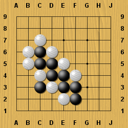

Начало
Начало
Погледнете формата на Белия, който се провали в опита си да атакува в предишната ни задача.
Той има толкова много слаби точки и от двете страни на стабилния Черен.
Макар да е ред на Белия, той не би могъл да защити всичките си слаби места само с един ход.
Черния може лесно да направи някое двойно атари за което вече научихте в урока за 47 кю. (вижте по-долу)
 Съдържание
Съдържание